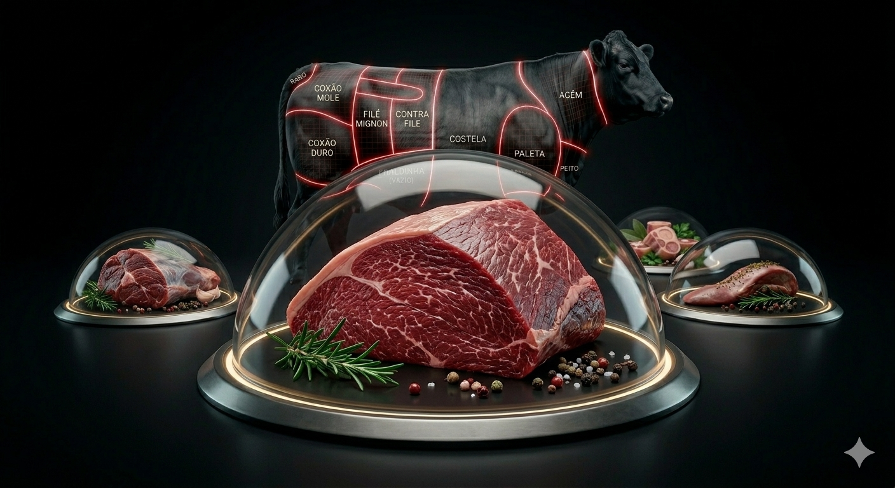

Mapa CarneCerta
Sabor alto e otimo para rechear
A ponta de alcatra combina estrutura firme com identidade marcante, otima para bifes recheados e panela.

Ideal para • bife a role • panela • ensopados
Maciez
3/5
Boa para rechear
Gordura
4/5
Mais presente
Sabor
5/5
Muito alto
Abrir recomendador inteligente
Ponta de Alcatra
Corte de sabor expressivo com boa presenca de gordura para receitas recheadas e preparos de longa coccao.
A ponta de alcatra segura bem o recheio no bife a role, absorve molho com facilidade e mantem identidade forte mesmo em panelas mais longas. E uma opcao muito estrategica quando o sabor precisa aparecer.
Bife a role premium
Molhos intensos
Boa suculencia
4.8
Melhor para role
A melhor leitura para bife a role no projeto, mantendo sabor alto e boa resposta tanto em panela quanto em cozimento umido.
Ideal para
Dica do açougueiro IA
Bata levemente os bifes antes de rechear. Isso melhora a dobra do corte e ajuda o cozimento uniforme sem romper a fibra.